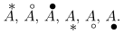
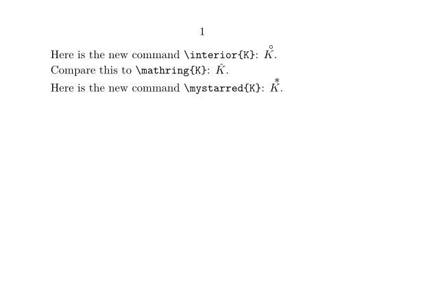
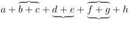
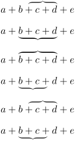
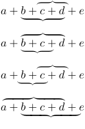

Contents
\mathover , \mathunder and \definemathstackers
ConTeXt has a nice structure called mathstackers in order to define new math commands in which some characters
are stacked over another one. For more information refer to math-stc.mkiv.
The two command \mathover[symbol]{}{} and \mathunder[symbol]{}{} are built and can be used directly.
-
\framed[frame=off]{% $\mathover[symbol]{"2217}{A}$, % 2217 is unicode for asterisk $\mathover[symbol]{"2218}{A}$, % 2218 is unicode for circle $\mathover[symbol]{"2219}{A}$, % 2219 is unicode for bullet $\mathunder[symbol]{"2217}{A}$, $\mathunder[symbol]{"2218}{A}$, $\mathunder[symbol]{"2219}{A}$.}
- 
However one may define one's own commands. A typical example is when you want to put a small circle on top of a letter (as one would when defining the topological interior of a set…).
To do so, with \definemathstackers we define first a new stacker named here MySymbol.
Then, invoking that with \definemathover we define two new commands which can be used in math mode
-
\interior -
\mystarred
-
\setuppapersize[A7,landscape] \definemathstackers[MySymbol] [voffset=-.3\mathexheight, hoffset=\zeropoint, mathclass=ord, topoffset=.4\mathemwidth, % poor man's italic correction middlecommand=\mathematics] \definemathover [MySymbol] [interior] ["2218] % this a small circle \definemathover [MySymbol] [mystarred] ["2217] % this is an asterisk \starttext Here is the new command \type{\interior{K}}: $\interior{K}$. Compare this to \type{\mathring{K}}: $\mathring{K}$. Here is the new command \type{\mystarred{K}}: $\mystarred{K}$. \stoptext
- 
Overbraces and underbraces
In math mode, you can put a brace over or under an expression this way:
-
\startformula a + \overbrace{b + c} + \underbrace{d + e} + \doublebrace{f + g} + h \stopformula
- 
The same goes for brackets (or other stackers):
-
\startformula a + \overbracket{b + c} + \underbracket{d + e} + \doublebracket{f + g} + h \stopformula
-

Adjusting stackers
You can adjust where the stackers start and end with the lt (left-top), rt (right-top), lb (left-bottom) and rb (right-bottom) parameters.
This feature was introduced in beta 2019-10-28.
-
$a + \overbrace [lt=1em] {b+c+d} + e$\blank $a + \underbrace [lt=1em] {b+c+d} + e$\blank $a + \overbrace [rb=1em] {b+c+d} + e$\blank $a + \underbrace [rb=1em] {b+c+d} + e$\blank $a + \overbrace [lt=1em,rb=1em] {b+c+d} + e$\blank $a + \underbrace [lt=1em,rb=1em] {b+c+d} + e$\blank
- 
Interleaved braces
Some terms of an expressions can be shared by both braces, tuning the lt, rt, lb and rb parameters:
-
$a + \doublebrace[lt=1.4em,rt=-.3em] {b+c+d} + e$\blank $a + \doublebrace[rb=1em] {b+c+d} + e$\blank $a + \doublebrace[lt=1.4em,rt=-.3em,lb=-.3em,rb=1.5em] {b+c+d} + e$\blank $a + \doublebrace[lt=-1.6em,rb=-1.4em] {b+c+d} + e$\blank
- 
See also
- Chapter "1. Math stackers" in the About manual .
- Section "1.8 Accents" in the Still manual .
- Section "10.6 Fancy fences" in the Math-MkIV manual .